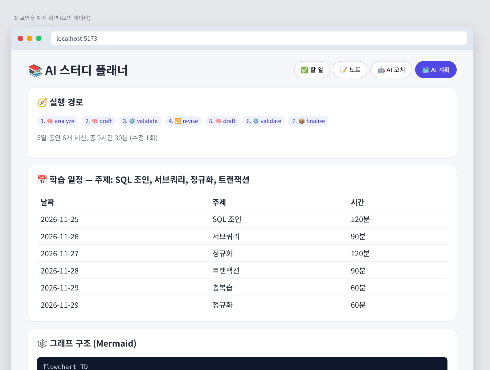

7주차 · 그래프 엔지니어링 (Graph Engineering)
"AI에게 길을 맡기지 말고, 길을 설계하라."
지난주 루프 에이전트는 다음 행동을 AI가 모두 결정했습니다. 유연하지만 예측하기 어렵습니다. 오늘은 업무 흐름을 노드·엣지·상태로 이루어진 그래프로 설계하고, AI는 정해진 노드 안에서만 일하게 만듭니다.
0. 수업 진행표 (3시간)#
| 시간 | 내용 | 형태 |
|---|---|---|
| 0:00 ~ 0:45 | 루프 vs 그래프 · 노드/엣지/상태 · 5가지 워크플로우 패턴 | 설명 |
| 0:45 ~ 1:25 | 실습 ① 그래프 엔진(StateGraph) 직접 만들기 + 테스트 | 실습 |
| 1:25 ~ 1:35 | 휴식 | |
| 1:35 ~ 2:35 | 실습 ② 학습계획 생성 워크플로우 (분석→초안→검증→수정→확정→저장) | 실습 |
| 2:35 ~ 2:55 | 실습 ③ 프론트엔드 계획 화면 | 실습 |
| 2:55 ~ 3:00 | 정리 · 과제 | 정리 |
1. 학습 목표#
- 루프와 그래프의 차이를 자율성 vs 예측 가능성 관점에서 설명할 수 있다.
- 그래프의 세 요소(노드·엣지·상태)와 조건부 엣지, 순환, 최대 단계를 설명할 수 있다.
- 대표 워크플로우 패턴 5가지(체이닝·라우팅·병렬화·오케스트레이터·평가-최적화)를 그림으로 구분할 수 있다.
- 라이브러리 없이 Java로 StateGraph 엔진을 만들고, 이를 이용해 "LLM 판단 + 코드 검증"이 섞인 워크플로우를 구현할 수 있다.
2. 개념 ① 왜 그래프인가?#
2.1 비유: 자유여행 vs 패키지여행#
| 루프 에이전트 (자유여행) | 그래프 워크플로우 (패키지여행) | |
|---|---|---|
| 다음 일정은 누가? | 여행자(AI)가 그때그때 | 여행사(설계자)가 미리 |
| 장점 | 예상 못 한 상황에 유연 | 일정·비용·품질이 예측 가능 |
| 단점 | 엉뚱한 곳에서 시간 낭비 | 계획에 없는 상황에 약함 |
| 잘 맞는 일 | 탐색, 질의응답, 열린 문제 | 절차가 정해진 업무, 승인·검증이 필요한 일 |
2.2 같은 일을 두 방식으로#
루프 방식: "학습 계획을 세워 줘" → AI가 알아서 도구를 부르고, 알아서 검토하고, 알아서 끝낸다(고 믿는다).
그래프 방식:
flowchart LR
S((시작)) --> A["analyze<br/>🧠 주제 분석 (LLM)"]
A --> D["draft<br/>🧠 일정 초안 (LLM)"]
D --> V{"validate<br/>⚙️ 규칙 검사 (코드)"}
V -.->|"문제 있음, 수정 2회 미만"| R["revise<br/>⚙️ 피드백 정리 (코드)"]
R --> D
V -.->|"통과 또는 수정 2회 소진"| F["finalize<br/>⚙️ 정리·요약 (코드)"]
F -.->|"저장 선택"| SV["save<br/>⚙️ 할 일 등록 (코드)"]
F -.->|"저장 안 함"| E((끝))
SV --> E📌 핵심 원칙: 판단은 LLM에게, 확인은 코드에게.
"하루 공부 시간이 한도를 넘는가?" 같은 질문은 LLM에게 물을 필요가 없습니다. 코드로 100% 정확하게 검사할 수 있습니다.
📖 용어 풀이 — 그래프 (Graph)와 워크플로우 (Workflow)
그래프: 수학·컴퓨터에서 점(노드)과 선(엣지)으로 관계를 나타낸 구조. 지하철 노선도가 대표적인 그래프입니다(역 = 노드, 선로 = 엣지).
워크플로우: 일이 처리되는 순서와 흐름. "기안 → 팀장 검토 → 반려 시 수정 → 승인"처럼요.
그래프 엔지니어링: 워크플로우를 그래프로 그려서 그대로 실행되는 코드로 만드는 것. 그림(설계도)과 코드가 1:1로 대응하므로 설명·디버깅·변경이 쉬워집니다.
2.3 그래프의 세 요소#
| 요소 | 의미 | 비유 (회사 결재) | 우리 코드 |
|---|---|---|---|
| 노드 V | 일을 하는 단위 (LLM 호출 또는 일반 코드) | 담당자 | addNode("draft", this::draft) |
| 엣지 E | 다음에 어디로 갈지 | 결재 라인 화살표 | addEdge("analyze", "draft") |
| 조건부 엣지 | 상태를 보고 갈 곳을 고름 | "반려되면 기안자에게" | addConditionalEdges("validate", router, ...) |
| 상태 S | 노드들이 함께 읽고 쓰는 데이터 | 결재 서류철 | PlanState |
실행 규칙을 식으로 쓰면:
수식 읽는 법: "\(k\)번째에 노드 \(v_k\)에 있으면, 그 노드의 함수 \(f\)가 상태 \(S\)를 고쳐 \(S_{k+1}\)을 만든다. 그다음 라우터가 새 상태를 보고 다음 노드 \(v_{k+1}\)을 고른다. END에 도착하거나 최대 단계를 넘으면 멈춘다."
flowchart LR
S0["상태 S0<br/>{goal}"] -->|"analyze"| S1["상태 S1<br/>{goal, topics}"]
S1 -->|"draft"| S2["상태 S2<br/>{..., items}"]
S2 -->|"validate"| S3["상태 S3<br/>{..., problems}"]상태는 노드를 지날 때마다 정보가 쌓이는 서류철입니다. 각 노드는 서류철을 받아서 자기 칸만 채우고 다음 노드로 넘깁니다.
2.4 순환(cycle)과 안전장치#
validate → revise → draft → validate 처럼 되돌아가는 엣지가 있으면 그래프에 순환이 생깁니다. 순환은 "다시 하기"를 표현하는 강력한 도구지만, 루프와 마찬가지로 멈춤 장치가 필요합니다.
| 안전장치 | 위치 | 우리 구현 |
|---|---|---|
| 업무 수준 한도 | 라우터 | 수정은 최대 2회 (MAX_REVISIONS) |
| 엔진 수준 한도 | 실행기 | 최대 20단계 넘으면 예외 (maxSteps) |
| 구조 검사 | 컴파일 시 | 나가는 엣지가 없는 노드, 없는 노드로 가는 엣지 → 오류 |
| 경로 검사 | 실행 시 | 라우터가 선언하지 않은 노드로 보내면 예외 |
📖 용어 풀이 — 결정적 (Deterministic) vs 비결정적
결정적: 같은 입력이면 항상 같은 결과. 일반 코드(
if 합계 > 120)가 그렇습니다.비결정적: 같은 입력이어도 결과가 달라질 수 있음. LLM 응답이 그렇습니다.
그래프 설계 원칙: 비결정적인 LLM 노드 뒤에 결정적인 코드 검증 노드를 두어 품질을 보장합니다. "창의적인 일은 AI, 확인은 코드".
2.5 대표 워크플로우 패턴 5가지#
① 프롬프트 체이닝 (Chaining) — 앞 단계 결과가 다음 단계 입력
flowchart LR
I["입력"] --> A["LLM 1<br/>개요"] --> G{"코드 검사"} --> B["LLM 2<br/>본문"] --> O["출력"]② 라우팅 (Routing) — 입력을 분류해 전문 경로로
flowchart LR
I["질문"] --> C{"분류기"}
C -->|"일정"| A["코치 에이전트"]
C -->|"개념"| B["노트 RAG"]
C -->|"기타"| D["일반 답변"]③ 병렬화 (Parallelization) — 독립적인 일을 동시에, 결과 취합
flowchart LR
I["노트"] --> A["요약"]
I --> B["퀴즈 생성"]
I --> C["키워드 추출"]
A --> M["취합"]
B --> M
C --> M④ 오케스트레이터-워커 (Orchestrator-Workers) — 관리자 LLM이 일을 쪼개 나눠 줌
flowchart LR
O["오케스트레이터<br/>과목별로 분할"] --> W1["워커: DB"]
O --> W2["워커: OS"]
O --> W3["워커: 네트워크"]
W1 --> S["종합"]
W2 --> S
W3 --> S⑤ 평가-최적화 (Evaluator-Optimizer) — 생성 → 평가 → 피드백 → 재생성
flowchart LR
G["생성기 (LLM)"] --> E{"평가기<br/>(코드 또는 LLM)"}
E -->|"피드백"| G
E -->|"합격"| O["출력"]오늘 만들 학습계획 그래프 = ① 체이닝 + ⑤ 평가-최적화(코드 평가기) + 조건부 라우팅의 조합입니다.
2.6 루프 · 그래프 비교 정리#
| 기준 | 루프 (6주차 코치) | 그래프 (7주차 계획) |
|---|---|---|
| 흐름 결정 | LLM | 설계자(코드) |
| LLM 호출 횟수 | 1 ~ 6회 (예측 어려움) | 2 ~ 4회 (상한이 명확) |
| 검증 | 모델의 자기 판단 + 도구 결과 | 노드 단위 코드 검증 |
| 디버깅 | 대화 기록을 읽어야 함 | 어느 노드에서 문제인지 바로 보임 |
| 테스트 | 시나리오 각본 | 노드별 단위 테스트 + 경로 테스트 |
| 섞어 쓰기 | 그래프의 노드 하나 안에 루프 에이전트를 넣을 수 있다 |
3. 실습 ① 그래프 엔진 직접 만들기#
업계에서는 LangGraph 같은 라이브러리를 많이 쓰지만, 원리는 100줄 남짓입니다. 직접 만들어 보면 어떤 라이브러리든 읽을 수 있게 됩니다.
📖 용어 풀이 — 제네릭
StateGraph<S>와 함수형 인터페이스
<S>(제네릭): "상태의 타입은 쓰는 쪽에서 정한다"는 뜻. 학습계획에는StateGraph<PlanState>, 테스트에는StateGraph<Counter>처럼 엔진 하나를 여러 곳에 씁니다.
UnaryOperator<S>: "S를 받아 S를 돌려주는 함수" — 노드 하나.Function<S, String>: "S를 받아 다음 노드 이름을 돌려주는 함수" — 라우터.
c -> { c.value++; return c; }: 이름 없는 함수(람다). 노드 내용을 짧게 쓸 수 있습니다.
Claude Code 프롬프트 — 그래프 엔진 (계획 모드 권장)
com.example.planner.graph 패키지에 라이브러리 없이 작은 상태 그래프 엔진 StateGraph<S>를 만들어 줘. (Spring 의존 없이 순수 Java)
- addNode(name, UnaryOperator<S>), addEdge(from, to), addConditionalEdges(from, router, 가능한 대상들...), setEntryPoint(name)
- END 상수, compile(): 시작 노드 확인, 나가는 엣지 없는 노드·존재하지 않는 대상 노드를 오류로
- invoke(state, maxSteps, trace): END까지 실행, 방문 노드를 trace에 기록, maxSteps 초과 시 예외,
조건부 엣지가 선언하지 않은 노드로 가면 예외
- toMermaid(): 구조를 Mermaid flowchart 문자열로 (조건부 엣지는 점선)
그리고 StateGraphTest(직선, 조건부 순환, 최대 단계 초과, 고아 노드, 허용 안 된 경로)를 작성하고 실행해 줘.3.1 📄 참고 코드 — 엔진 코드#
backend/src/main/java/com/example/planner/graph/StateGraph.java
package com.example.planner.graph;
import java.util.HashSet;
import java.util.LinkedHashMap;
import java.util.List;
import java.util.Map;
import java.util.Set;
import java.util.function.Function;
import java.util.function.UnaryOperator;
/**
* 아주 작은 상태 그래프 엔진.
* 노드 = 상태를 받아 상태를 돌려주는 함수, 엣지 = 다음 노드를 고르는 함수.
*/
public class StateGraph<S> {
public static final String END = "END";
private final Map<String, UnaryOperator<S>> nodes = new LinkedHashMap<>();
private final Map<String, Function<S, String>> routers = new LinkedHashMap<>();
private final Map<String, List<String>> edgeTargets = new LinkedHashMap<>();
private final Set<String> conditional = new HashSet<>();
private String entryPoint;
public StateGraph<S> addNode(String name, UnaryOperator<S> action) {
if (END.equals(name) || nodes.containsKey(name)) {
throw new IllegalArgumentException("사용할 수 없는 노드 이름: " + name);
}
nodes.put(name, action);
return this;
}
/** 항상 같은 곳으로 가는 엣지 */
public StateGraph<S> addEdge(String from, String to) {
routers.put(from, state -> to);
edgeTargets.put(from, List.of(to));
return this;
}
/** 상태를 보고 갈 곳을 고르는 엣지. 갈 수 있는 곳을 미리 선언한다. */
public StateGraph<S> addConditionalEdges(String from, Function<S, String> router, String... possibleTargets) {
routers.put(from, router);
edgeTargets.put(from, List.of(possibleTargets));
conditional.add(from);
return this;
}
public StateGraph<S> setEntryPoint(String name) {
this.entryPoint = name;
return this;
}
/** 구조 검사: 실행 전에 설계 오류를 찾아낸다 */
public StateGraph<S> compile() {
if (entryPoint == null || !nodes.containsKey(entryPoint)) {
throw new IllegalStateException("시작 노드가 올바르지 않습니다: " + entryPoint);
}
for (String node : nodes.keySet()) {
if (!routers.containsKey(node)) {
throw new IllegalStateException("나가는 엣지가 없는 노드: " + node);
}
for (String target : edgeTargets.get(node)) {
if (!END.equals(target) && !nodes.containsKey(target)) {
throw new IllegalStateException("존재하지 않는 노드로 가는 엣지: " + node + " → " + target);
}
}
}
return this;
}
/** 그래프 실행. trace에 방문한 노드 이름을 순서대로 기록한다. */
public S invoke(S state, int maxSteps, List<String> trace) {
String current = entryPoint;
int steps = 0;
while (!END.equals(current)) {
if (++steps > maxSteps) {
throw new IllegalStateException("최대 단계(" + maxSteps + ")를 넘었습니다. 순환이 끝나지 않습니다.");
}
trace.add(current);
state = nodes.get(current).apply(state); // 노드 실행
String next = routers.get(current).apply(state); // 엣지 선택
if (conditional.contains(current) && !edgeTargets.get(current).contains(next)) {
throw new IllegalStateException("허용되지 않은 경로: " + current + " → " + next);
}
current = next;
}
return state;
}
/** 그래프 구조를 Mermaid 문법으로 출력 (문서·화면 표시용) */
public String toMermaid() {
StringBuilder sb = new StringBuilder("flowchart TD\n");
sb.append(" START((시작)) --> ").append(entryPoint).append('\n');
edgeTargets.forEach((from, targets) -> {
for (String to : targets) {
sb.append(" ").append(from)
.append(conditional.contains(from) ? " -.-> " : " --> ")
.append(END.equals(to) ? "FINISH((끝))" : to)
.append('\n');
}
});
return sb.toString();
}
}| 엔진의 부분 | 그래프 개념 |
|---|---|
nodes |
V (노드) |
routers, edgeTargets |
E (엣지) |
S state |
S (상태) |
compile() |
설계 오류 검사 |
maxSteps |
순환 안전장치 |
trace |
실행 경로 추적 (디버깅·화면 표시) |
3.2 📄 참고 코드 — 엔진 테스트 (LLM 없이)#
backend/src/test/java/com/example/planner/graph/StateGraphTest.java
package com.example.planner.graph;
import static org.assertj.core.api.Assertions.assertThat;
import static org.assertj.core.api.Assertions.assertThatThrownBy;
import java.util.ArrayList;
import java.util.List;
import org.junit.jupiter.api.Test;
class StateGraphTest {
/** 테스트용 상태: 숫자 하나 */
static class Counter {
int value;
}
@Test
void 직선_그래프는_순서대로_실행된다() {
StateGraph<Counter> graph = new StateGraph<Counter>()
.addNode("plus1", c -> { c.value += 1; return c; })
.addNode("times10", c -> { c.value *= 10; return c; })
.setEntryPoint("plus1")
.addEdge("plus1", "times10")
.addEdge("times10", StateGraph.END)
.compile();
List<String> trace = new ArrayList<>();
Counter result = graph.invoke(new Counter(), 10, trace);
assertThat(result.value).isEqualTo(10);
assertThat(trace).containsExactly("plus1", "times10");
}
@Test
void 조건부_엣지로_순환하다가_조건을_만족하면_끝난다() {
StateGraph<Counter> graph = new StateGraph<Counter>()
.addNode("inc", c -> { c.value++; return c; })
.setEntryPoint("inc")
.addConditionalEdges("inc", c -> c.value < 3 ? "inc" : StateGraph.END, "inc", StateGraph.END)
.compile();
List<String> trace = new ArrayList<>();
graph.invoke(new Counter(), 10, trace);
assertThat(trace).containsExactly("inc", "inc", "inc");
}
@Test
void 끝나지_않는_순환은_최대단계에서_예외가_발생한다() {
StateGraph<Counter> graph = new StateGraph<Counter>()
.addNode("forever", c -> c)
.setEntryPoint("forever")
.addEdge("forever", "forever")
.compile();
assertThatThrownBy(() -> graph.invoke(new Counter(), 5, new ArrayList<>()))
.isInstanceOf(IllegalStateException.class)
.hasMessageContaining("최대 단계");
}
@Test
void 나가는_엣지가_없는_노드는_compile에서_잡힌다() {
StateGraph<Counter> graph = new StateGraph<Counter>()
.addNode("a", c -> c)
.addNode("orphan", c -> c)
.setEntryPoint("a")
.addEdge("a", StateGraph.END);
assertThatThrownBy(graph::compile).hasMessageContaining("orphan");
}
@Test
void 선언하지_않은_경로로_라우팅하면_예외() {
StateGraph<Counter> graph = new StateGraph<Counter>()
.addNode("a", c -> c)
.addNode("b", c -> c)
.setEntryPoint("a")
.addConditionalEdges("a", c -> "b", StateGraph.END) // b로 간다고 선언하지 않음
.addEdge("b", StateGraph.END)
.compile();
assertThatThrownBy(() -> graph.invoke(new Counter(), 10, new ArrayList<>()))
.hasMessageContaining("허용되지 않은 경로");
}
}직접 실행
cd backend && ./gradlew test --tests "*StateGraphTest"결과 확인
StateGraphTest > 직선_그래프는_순서대로_실행된다() PASSED
StateGraphTest > 조건부_엣지로_순환하다가_조건을_만족하면_끝난다() PASSED
StateGraphTest > 끝나지_않는_순환은_최대단계에서_예외가_발생한다() PASSED
StateGraphTest > 나가는_엣지가_없는_노드는_compile에서_잡힌다() PASSED
StateGraphTest > 선언하지_않은_경로로_라우팅하면_예외() PASSED
BUILD SUCCESSFULLLM 없이도 그래프의 흐름 규칙이 맞는지 확인했습니다. 엔진이 믿을 만해야 그 위에 올린 AI 워크플로우도 믿을 수 있습니다.
4. 실습 ② 학습계획 생성 워크플로우#
4.1 노드 설계표#
| 노드 | 종류 | 읽는 상태 | 쓰는 상태 | 설명 |
|---|---|---|---|---|
analyze |
🧠 LLM | goal | topics | 목표를 학습 주제 3~8개로 분해 |
draft |
🧠 LLM | topics, 기간, 하루 한도, problems | items | 날짜별 일정 초안(JSON). problems가 있으면 반영 |
validate |
⚙️ 코드 | items, topics, 기간, 한도 | problems | 기간·하루 한도·주제 누락 검사 |
revise |
⚙️ 코드 | revision | revision | 수정 횟수 +1 (피드백은 problems에 이미 있음) |
finalize |
⚙️ 코드 | items, problems | items(정렬), summary | 정렬·요약 |
save |
⚙️ 코드(부작용) | items | savedCount | 할 일로 등록 — 사용자가 선택했을 때만 |
💡
save처럼 DB를 바꾸는(되돌리기 어려운) 노드는 사용자의 명시적 선택(saveAsTasks)이 있을 때만 지나가도록 조건부 엣지로 막습니다. 이것이 그래프에서의 사람 승인(Human-in-the-loop) 의 가장 단순한 형태입니다.
Claude Code 프롬프트 — 학습계획 그래프 (위 노드 설계표를 그대로 전달)
StateGraph로 학습계획 생성 워크플로우를 만들어 줘. 노드 설계는 아래 표와 같아.
analyze(LLM): goal → topics(3~8개, JSON {"topics": [...]})
draft(LLM): topics, 시작일(오늘, Asia/Seoul), 마지막 공부일(시험 전날), 하루 한도, 이전 problems → items(JSON {"items":[{date, topic, minutes}]})
validate(코드): 기간 밖 날짜, 0분 이하, 날짜별 합계가 하루 한도 초과, 빠진 주제를 problems에 기록
route: problems 없으면 finalize, 있으면 revision < 2일 때 revise, 아니면 finalize
revise(코드): revision++ 후 draft로
finalize(코드): 날짜순 정렬 + 요약 문장, saveAsTasks면 save로, 아니면 END
save(코드): 각 항목을 "[계획] 주제" 할 일로 등록
- PlanState(public 필드), PlanItem/PlanRequest(@Future examDate, 30~720분)/PlanResult(trace, mermaid 포함) record
- 프롬프트는 PromptTemplates에 PLAN_ANALYZE_SYSTEM, PLAN_DRAFT_SYSTEM으로. LLM은 JSON 모드(generate(..., true))
- JSON 파싱은 Spring이 주입하는 Jackson 3 JsonMapper 사용, 파싱 실패는 draft에서 빈 items로 처리
- 시험일이 30일 넘게 남으면 IllegalArgumentException → 400
- POST /api/ai/plan, FakeLlmClient로 경로 테스트(수정 1회 후 통과 / 최대 수정 후 확정 / 저장 경로)4.2 📄 참고 코드 — 상태와 DTO#
graph/PlanItem.java
package com.example.planner.graph;
import java.time.LocalDate;
public record PlanItem(LocalDate date, String topic, int minutes) {
}graph/PlanState.java
package com.example.planner.graph;
import java.time.LocalDate;
import java.util.ArrayList;
import java.util.List;
/** 그래프의 노드들이 함께 읽고 쓰는 상태 (학습용으로 public 필드 사용) */
public class PlanState {
// ── 입력 ──
public String goal;
public LocalDate startDate;
public LocalDate lastStudyDate; // 시험 전날
public int dailyMinutes;
public boolean saveAsTasks;
// ── 노드들이 채우는 값 ──
public List<String> topics = new ArrayList<>();
public List<PlanItem> items = new ArrayList<>();
public List<String> problems = new ArrayList<>();
public int revision;
public int savedCount;
public String summary;
}graph/PlanRequest.java, graph/PlanResult.java
package com.example.planner.graph;
import java.time.LocalDate;
import jakarta.validation.constraints.Future;
import jakarta.validation.constraints.Max;
import jakarta.validation.constraints.Min;
import jakarta.validation.constraints.NotBlank;
import jakarta.validation.constraints.NotNull;
import jakarta.validation.constraints.Size;
public record PlanRequest(
@NotBlank @Size(max = 300) String goal,
@NotNull @Future LocalDate examDate,
@Min(30) @Max(720) int dailyMinutes,
boolean saveAsTasks) {
}package com.example.planner.graph;
import java.util.List;
public record PlanResult(
List<String> topics,
List<PlanItem> items,
List<String> problems,
int revisions,
int savedCount,
String summary,
List<String> trace,
String mermaid) {
}4.3 📄 참고 코드 — 프롬프트 (각 LLM 노드는 "자기 일만" 안다)#
컨텍스트 전략 나누기(Isolate) 를 떠올려 보세요. analyze 노드는 일정 규칙을 몰라도 되고, draft 노드는 원래 목표 문장을 몰라도 됩니다. 노드별로 꼭 필요한 정보만 줍니다.
ai/PromptTemplates.java에 추가:
// ── 학습계획 그래프: analyze 노드 ─────────────────────────
public static final String PLAN_ANALYZE_SYSTEM = """
너는 대학 시험 대비 학습 설계 전문가다.
학생의 목표를 공부해야 할 주제 3~8개로 나눈다.
- 주제는 짧은 명사구로 쓴다. 예: "SQL 조인", "정규화"
- 배우는 순서대로 나열한다.
- 반드시 JSON만 출력한다: {"topics": ["주제1", "주제2"]}
""";
public static String planAnalyzeUser(String goal) {
return "<goal>%s</goal>".formatted(goal);
}
// ── 학습계획 그래프: draft 노드 ───────────────────────────
public static final String PLAN_DRAFT_SYSTEM = """
너는 학습 일정 플래너다. 주어진 주제로 날짜별 공부 일정을 만든다.
[규칙]
- 날짜는 시작일부터 마지막 공부일까지(포함)만 사용한다.
- 같은 날짜의 minutes 합계는 하루 한도를 넘지 않는다.
- 모든 주제를 최소 한 번 배치하고, 주제 이름은 주어진 것을 그대로 쓴다.
- 남는 날은 "총복습"으로 채워도 된다.
- 반드시 JSON만 출력한다:
{"items": [{"date": "YYYY-MM-DD", "topic": "주제", "minutes": 60}]}
""";
public static String planDraftUser(java.util.List<String> topics, java.time.LocalDate start,
java.time.LocalDate last, int dailyMinutes,
java.util.List<String> problems) {
String feedback = problems.isEmpty() ? ""
: "\n[이전 초안의 문제점 — 반드시 고칠 것]\n- " + String.join("\n- ", problems);
return """
주제: %s
시작일: %s
마지막 공부일: %s
하루 한도: %d분%s
""".formatted(topics, start, last, dailyMinutes, feedback);
}💡
draft노드가 다시 실행될 때는validate가 찾은 문제점 목록이 피드백으로 들어갑니다. 이것이 평가-최적화 패턴의 핵심입니다. 그리고 그 평가는 LLM이 아니라 코드가 했기 때문에 정확합니다.
4.4 📄 참고 코드 — ★ 그래프 조립#
📖 용어 풀이 — 메서드 참조
this::analyze
this::analyze는 "이 객체의analyze메서드를 함수로 넘긴다"는 뜻입니다. 그래서 그래프 조립 부분(생성자)만 읽으면 설계도(노드·엣지) 가 보이고, 각 노드의 실제 일은 아래 메서드에서 따로 읽을 수 있습니다. 설계와 구현이 분리되는 것이 그래프 코드의 장점입니다.
graph/StudyPlanGraph.java
package com.example.planner.graph;
import java.time.LocalDate;
import java.time.ZoneId;
import java.time.temporal.ChronoUnit;
import java.util.ArrayList;
import java.util.Comparator;
import java.util.List;
import java.util.Map;
import java.util.TreeMap;
import org.springframework.stereotype.Component;
import com.example.planner.ai.LlmClient;
import com.example.planner.ai.PromptTemplates;
import com.example.planner.task.TaskRequest;
import com.example.planner.task.TaskService;
import com.fasterxml.jackson.annotation.JsonIgnoreProperties;
import tools.jackson.core.JacksonException;
import tools.jackson.databind.json.JsonMapper;
@Component
public class StudyPlanGraph {
static final int MAX_REVISIONS = 2; // 업무 수준 안전장치
static final int MAX_STEPS = 20; // 엔진 수준 안전장치
static final int MAX_DAYS = 30;
@JsonIgnoreProperties(ignoreUnknown = true)
public record TopicsJson(List<String> topics) {
}
@JsonIgnoreProperties(ignoreUnknown = true)
public record DraftJson(List<DraftItem> items) {
}
@JsonIgnoreProperties(ignoreUnknown = true)
public record DraftItem(LocalDate date, String topic, int minutes) {
}
private final LlmClient llm;
private final JsonMapper json;
private final TaskService taskService;
private final StateGraph<PlanState> graph;
public StudyPlanGraph(LlmClient llm, JsonMapper json, TaskService taskService) {
this.llm = llm;
this.json = json;
this.taskService = taskService;
this.graph = new StateGraph<PlanState>()
.addNode("analyze", this::analyze)
.addNode("draft", this::draft)
.addNode("validate", this::validate)
.addNode("revise", this::revise)
.addNode("finalize", this::finalizePlan)
.addNode("save", this::save)
.setEntryPoint("analyze")
.addEdge("analyze", "draft")
.addEdge("draft", "validate")
.addConditionalEdges("validate", this::routeAfterValidate, "revise", "finalize")
.addEdge("revise", "draft")
.addConditionalEdges("finalize", s -> s.saveAsTasks ? "save" : StateGraph.END, "save", StateGraph.END)
.addEdge("save", StateGraph.END)
.compile();
}
public PlanResult run(PlanRequest request) {
LocalDate today = LocalDate.now(ZoneId.of("Asia/Seoul"));
long days = ChronoUnit.DAYS.between(today, request.examDate());
if (days > MAX_DAYS) {
throw new IllegalArgumentException("시험일은 오늘부터 " + MAX_DAYS + "일 이내로 입력하세요.");
}
PlanState state = new PlanState();
state.goal = request.goal();
state.startDate = today;
state.lastStudyDate = request.examDate().minusDays(1);
state.dailyMinutes = request.dailyMinutes();
state.saveAsTasks = request.saveAsTasks();
List<String> trace = new ArrayList<>();
graph.invoke(state, MAX_STEPS, trace);
return new PlanResult(state.topics, state.items, state.problems, state.revision,
state.savedCount, state.summary, trace, graph.toMermaid());
}
// ───────────── 노드들 ─────────────
/** 🧠 LLM: 목표 → 주제 목록 */
PlanState analyze(PlanState s) {
String out = llm.generate(PromptTemplates.PLAN_ANALYZE_SYSTEM, PromptTemplates.planAnalyzeUser(s.goal), true);
TopicsJson parsed = parse(out, TopicsJson.class);
s.topics = parsed.topics() == null ? List.of()
: parsed.topics().stream().map(String::trim).filter(t -> !t.isBlank()).limit(8).toList();
if (s.topics.isEmpty()) {
throw new IllegalStateException("목표에서 학습 주제를 찾지 못했습니다. 목표를 더 구체적으로 적어 주세요.");
}
return s;
}
/** 🧠 LLM: 주제 + 제약 (+ 이전 문제점) → 일정 초안 */
PlanState draft(PlanState s) {
String out = llm.generate(PromptTemplates.PLAN_DRAFT_SYSTEM,
PromptTemplates.planDraftUser(s.topics, s.startDate, s.lastStudyDate, s.dailyMinutes, s.problems), true);
try {
DraftJson parsed = parse(out, DraftJson.class);
s.items = parsed.items() == null ? List.of()
: parsed.items().stream()
.filter(i -> i.date() != null && i.topic() != null)
.map(i -> new PlanItem(i.date(), i.topic().trim(), i.minutes()))
.toList();
} catch (IllegalStateException e) {
s.items = List.of(); // 형식이 깨진 초안 → validate가 문제로 보고하고 revise로 보낸다
}
return s;
}
/** ⚙️ 코드: 규칙 검사 (LLM보다 정확하고, 공짜다) */
PlanState validate(PlanState s) {
List<String> problems = new ArrayList<>();
if (s.items.isEmpty()) {
problems.add("일정 항목이 비어 있거나 JSON 형식이 잘못되었다");
}
Map<LocalDate, Integer> perDay = new TreeMap<>();
for (PlanItem item : s.items) {
if (item.date().isBefore(s.startDate) || item.date().isAfter(s.lastStudyDate)) {
problems.add(item.date() + "은(는) 공부 기간(" + s.startDate + " ~ " + s.lastStudyDate + ") 밖이다");
}
if (item.minutes() <= 0) {
problems.add(item.date() + " '" + item.topic() + "'의 시간이 0분 이하다");
}
perDay.merge(item.date(), item.minutes(), Integer::sum);
}
perDay.forEach((date, minutes) -> {
if (minutes > s.dailyMinutes) {
problems.add(date + " 합계 " + minutes + "분이 하루 한도 " + s.dailyMinutes + "분을 넘는다");
}
});
for (String topic : s.topics) {
boolean covered = s.items.stream().anyMatch(i -> i.topic().contains(topic) || topic.contains(i.topic()));
if (!covered) {
problems.add("주제 '" + topic + "'이(가) 일정에 없다");
}
}
s.problems = problems;
return s;
}
/** 🔀 라우터: 통과면 확정, 아니면 수정 (단, 최대 2회) */
String routeAfterValidate(PlanState s) {
if (s.problems.isEmpty()) {
return "finalize";
}
return s.revision < MAX_REVISIONS ? "revise" : "finalize";
}
/** ⚙️ 코드: 수정 횟수 기록 (문제점은 이미 state.problems에 있어 draft에 전달된다) */
PlanState revise(PlanState s) {
s.revision++;
return s;
}
/** ⚙️ 코드: 정렬 + 요약 */
PlanState finalizePlan(PlanState s) {
s.items = s.items.stream()
.sorted(Comparator.comparing(PlanItem::date).thenComparing(PlanItem::topic))
.toList();
int total = s.items.stream().mapToInt(PlanItem::minutes).sum();
long studyDays = s.items.stream().map(PlanItem::date).distinct().count();
s.summary = "%d일 동안 %d개 세션, 총 %d시간 %d분 (수정 %d회)%s".formatted(
studyDays, s.items.size(), total / 60, total % 60, s.revision,
s.problems.isEmpty() ? "" : " ⚠️ 해결되지 않은 문제 " + s.problems.size() + "건");
return s;
}
/** ⚙️ 코드(부작용): 할 일로 등록 — saveAsTasks가 true일 때만 도달 */
PlanState save(PlanState s) {
for (PlanItem item : s.items) {
String title = "[계획] " + (item.topic().length() > 90 ? item.topic().substring(0, 90) : item.topic());
taskService.create(new TaskRequest(title, "학습계획", item.date(), Math.min(item.minutes(), 600)));
}
s.savedCount = s.items.size();
return s;
}
private <T> T parse(String text, Class<T> type) {
String cleaned = text.strip();
if (cleaned.startsWith("```")) { // 혹시 코드 블록으로 감싸 오면 벗겨 낸다
cleaned = cleaned.replaceFirst("^```(json)?", "").replaceFirst("```$", "").strip();
}
try {
return json.readValue(cleaned, type);
} catch (JacksonException e) {
throw new IllegalStateException("AI 응답 JSON을 해석하지 못했습니다: " + e.getOriginalMessage());
}
}
}💡 Spring Boot 4는 Jackson 3의
JsonMapper(tools.jackson.databind.json.JsonMapper)를 빈으로 등록해 두므로 생성자로 주입받아 쓰면 됩니다. Jackson 3의 예외(JacksonException)는 언체크 예외라서throws를 쓰지 않아도 됩니다.
4.5 📄 참고 코드 — 컨트롤러와 예외 처리#
graph/GraphController.java
package com.example.planner.graph;
import org.springframework.web.bind.annotation.PostMapping;
import org.springframework.web.bind.annotation.RequestBody;
import org.springframework.web.bind.annotation.RequestMapping;
import org.springframework.web.bind.annotation.RestController;
import jakarta.validation.Valid;
@RestController
@RequestMapping("/api/ai")
public class GraphController {
private final StudyPlanGraph studyPlanGraph;
public GraphController(StudyPlanGraph studyPlanGraph) {
this.studyPlanGraph = studyPlanGraph;
}
@PostMapping("/plan")
public PlanResult plan(@Valid @RequestBody PlanRequest request) {
return studyPlanGraph.run(request);
}
}common/GlobalExceptionHandler.java에 추가 (잘못된 입력 → 400):
@ExceptionHandler(IllegalArgumentException.class)
public ProblemDetail handleIllegalArgument(IllegalArgumentException e) {
return ProblemDetail.forStatusAndDetail(HttpStatus.BAD_REQUEST, e.getMessage());
}4.6 📄 참고 코드 — 워크플로우 테스트 (가짜 LLM으로 경로 검증)#
5주차의 FakeLlmClient를 재사용합니다. LLM 응답 순서를 각본으로 정해 두고, 그래프가 어떤 경로로 지나갔는지를 검증합니다.
backend/src/test/java/com/example/planner/graph/StudyPlanGraphTest.java
package com.example.planner.graph;
import static org.assertj.core.api.Assertions.assertThat;
import java.time.LocalDate;
import java.time.ZoneId;
import org.junit.jupiter.api.BeforeEach;
import org.junit.jupiter.api.Test;
import org.springframework.beans.factory.annotation.Autowired;
import org.springframework.boot.test.context.SpringBootTest;
import org.springframework.boot.test.context.TestConfiguration;
import org.springframework.context.annotation.Bean;
import org.springframework.context.annotation.Primary;
import org.springframework.transaction.annotation.Transactional;
import com.example.planner.ai.FakeLlmClient;
import com.example.planner.task.TaskService;
@SpringBootTest
@Transactional
class StudyPlanGraphTest {
@TestConfiguration
static class FakeLlmConfig {
@Bean
@Primary
FakeLlmClient fakeLlmClient() {
return new FakeLlmClient();
}
}
@Autowired StudyPlanGraph planGraph;
@Autowired FakeLlmClient fakeLlm;
@Autowired TaskService taskService;
final LocalDate today = LocalDate.now(ZoneId.of("Asia/Seoul"));
@BeforeEach
void setUp() {
fakeLlm.reset();
}
private String item(int plusDays, String topic, int minutes) {
return "{\"date\":\"%s\",\"topic\":\"%s\",\"minutes\":%d}".formatted(today.plusDays(plusDays), topic, minutes);
}
@Test
void 첫_초안이_한도를_넘으면_수정_경로를_거쳐_통과한다() {
fakeLlm.willReturn(
"{\"topics\":[\"SQL\",\"정규화\"]}", // analyze
"{\"items\":[" + item(0, "SQL", 100) + "," + item(0, "정규화", 60) + "]}", // draft 1: 160분 > 120분
"{\"items\":[" + item(0, "SQL", 100) + "," + item(1, "정규화", 90) + "]}"); // draft 2: 통과
PlanResult result = planGraph.run(new PlanRequest("DB 기말고사 대비", today.plusDays(5), 120, false));
assertThat(result.trace()).containsExactly(
"analyze", "draft", "validate", "revise", "draft", "validate", "finalize");
assertThat(result.revisions()).isEqualTo(1);
assertThat(result.problems()).isEmpty();
assertThat(result.items()).hasSize(2);
// 두 번째 draft 프롬프트에 validate의 피드백이 들어갔는가?
assertThat(fakeLlm.lastUserPrompt()).contains("이전 초안의 문제점").contains("하루 한도");
}
@Test
void 계속_실패하면_최대_수정_횟수_후_문제를_안고_확정한다() {
String bad = "{\"items\":[" + item(0, "SQL", 500) + "]}"; // 한도 초과 + 정규화 누락
fakeLlm.willReturn("{\"topics\":[\"SQL\",\"정규화\"]}", bad, bad, bad);
PlanResult result = planGraph.run(new PlanRequest("DB 기말고사 대비", today.plusDays(5), 120, false));
assertThat(result.revisions()).isEqualTo(StudyPlanGraph.MAX_REVISIONS);
assertThat(result.trace()).filteredOn("draft"::equals).hasSize(3);
assertThat(result.problems()).isNotEmpty();
assertThat(result.summary()).contains("해결되지 않은 문제");
assertThat(fakeLlm.callCount()).isEqualTo(4); // analyze 1 + draft 3 — 상한이 명확하다!
}
@Test
void 저장을_선택하면_save_노드를_지나_할일이_등록된다() {
fakeLlm.willReturn(
"{\"topics\":[\"SQL\"]}",
"{\"items\":[" + item(1, "SQL", 60) + "]}");
PlanResult result = planGraph.run(new PlanRequest("SQL 복습", today.plusDays(3), 120, true));
assertThat(result.trace()).endsWith("finalize", "save");
assertThat(result.savedCount()).isEqualTo(1);
assertThat(taskService.findAll()).anyMatch(t -> t.title().equals("[계획] SQL"));
}
}직접 실행
cd backend && ./gradlew test결과 확인
StudyPlanGraphTest > 첫_초안이_한도를_넘으면_수정_경로를_거쳐_통과한다() PASSED
StudyPlanGraphTest > 계속_실패하면_최대_수정_횟수_후_문제를_안고_확정한다() PASSED
StudyPlanGraphTest > 저장을_선택하면_save_노드를_지나_할일이_등록된다() PASSED
BUILD SUCCESSFUL세 테스트는 각각 그래프의 세 가지 경로(수정 후 통과 / 수정 한도 도달 / 저장)를 검증합니다. "LLM 호출이 최대 4번"이라는 비용 상한도 테스트로 보장했습니다.
4.7 ✅ 결과 확인 — 실제 모델로 실행#
직접 실행
curl -s -X POST localhost:8080/api/ai/plan -H "Content-Type: application/json" \
-d '{"goal":"데이터베이스 기말고사: SQL 조인, 서브쿼리, 정규화, 트랜잭션, 인덱스","examDate":"2026-12-05","dailyMinutes":120,"saveAsTasks":false}'⚠️
examDate는 오늘 이후 30일 이내의 날짜로 바꿔서 실행하세요.
결과 확인 — 응답 예 (모델에 따라 다름)
{
"topics": ["SQL 조인", "서브쿼리", "정규화", "트랜잭션"],
"items": [
{ "date": "2026-11-25", "topic": "SQL 조인", "minutes": 120 },
{ "date": "2026-11-26", "topic": "서브쿼리", "minutes": 90 }
],
"problems": [],
"revisions": 1,
"savedCount": 0,
"summary": "5일 동안 6개 세션, 총 9시간 30분 (수정 1회)",
"trace": ["analyze", "draft", "validate", "revise", "draft", "validate", "finalize"],
"mermaid": "flowchart TD\n START((시작)) --> analyze\n ..."
}응답의 trace로 그래프가 실제로 지나간 경로를, mermaid로 그래프 구조를 확인할 수 있습니다. mermaid 값을 mermaid.live에 붙여 넣으면 그림으로 볼 수 있습니다.
5. 실습 ③ 프론트엔드: 계획 화면#
Claude Code 프롬프트 — 계획 화면
"🗺️ AI 계획" 탭을 추가해 줘.
- src/api.ts에 PlanItem, PlanResult, PlanInput 타입과 aiApi.plan(input)
- pages/PlanPage.tsx: 목표(textarea), 시험일, 하루 분, "할 일로 저장" 체크박스, 계획 만들기 버튼
- 결과: 실행 경로를 노드 아이콘(🧠 analyze/draft, ⚙️ validate, 🔁 revise, 📦 finalize, 💾 save) 배지로 순서대로,
요약, 남은 문제(있으면 error 스타일), 일정 표(날짜·주제·시간), Mermaid 원문(trace 클래스)
- App.tsx에 네 번째 탭으로 추가참고 코드 — api.ts 추가분
src/api.ts에 추가:
export interface PlanItem {
date: string;
topic: string;
minutes: number;
}
export interface PlanResult {
topics: string[];
items: PlanItem[];
problems: string[];
revisions: number;
savedCount: number;
summary: string;
trace: string[];
mermaid: string;
}
export interface PlanInput {
goal: string;
examDate: string;
dailyMinutes: number;
saveAsTasks: boolean;
}aiApi에 한 줄 추가:
plan: (input: PlanInput) => post<PlanResult>('/api/ai/plan', input),참고 코드 — PlanPage.tsx / App.tsx (최종)
src/pages/PlanPage.tsx
import { useState } from 'react';
import { aiApi } from '../api';
import type { PlanResult } from '../api';
const NODE_ICON: Record<string, string> = {
analyze: '🧠', draft: '🧠', validate: '⚙️', revise: '🔁', finalize: '📦', save: '💾',
};
export default function PlanPage() {
const [goal, setGoal] = useState('데이터베이스 기말고사: SQL 조인, 서브쿼리, 정규화, 트랜잭션');
const [examDate, setExamDate] = useState('');
const [dailyMinutes, setDailyMinutes] = useState(120);
const [saveAsTasks, setSaveAsTasks] = useState(false);
const [result, setResult] = useState<PlanResult | null>(null);
const [loading, setLoading] = useState(false);
const [error, setError] = useState<string | null>(null);
async function run() {
if (!goal.trim() || !examDate) return;
setLoading(true);
setError(null);
setResult(null);
try {
setResult(await aiApi.plan({ goal, examDate, dailyMinutes, saveAsTasks }));
} catch (e) {
setError((e as Error).message);
} finally {
setLoading(false);
}
}
return (
<>
<section className="card">
<h2>🗺️ AI 학습계획 (그래프 워크플로우)</h2>
<textarea style={{ minHeight: 70 }} value={goal} onChange={(e) => setGoal(e.target.value)} />
<div className="row">
<label>시험일 <input type="date" value={examDate} onChange={(e) => setExamDate(e.target.value)} /></label>
<label>
하루 <input type="number" min={30} max={720} step={30} style={{ width: 90 }}
value={dailyMinutes} onChange={(e) => setDailyMinutes(Number(e.target.value))} />분
</label>
<label>
<input type="checkbox" checked={saveAsTasks} onChange={(e) => setSaveAsTasks(e.target.checked)} /> 할 일로 저장
</label>
<button className="primary" disabled={loading} onClick={() => void run()}>
{loading ? '그래프 실행 중...' : '계획 만들기'}
</button>
</div>
{error && <p className="error">{error}</p>}
</section>
{result && (
<>
<section className="card">
<h2>🧭 실행 경로</h2>
<div className="row">
{result.trace.map((node, i) => (
<span key={i} className="badge">
{i + 1}. {NODE_ICON[node] ?? '•'} {node}
</span>
))}
</div>
<p className="muted">{result.summary}</p>
{result.savedCount > 0 && <p>💾 할 일 {result.savedCount}개가 등록되었습니다.</p>}
{result.problems.length > 0 && (
<div className="error">
⚠️ 남은 문제
<ul>{result.problems.map((p) => <li key={p}>{p}</li>)}</ul>
</div>
)}
</section>
<section className="card">
<h2>📅 학습 일정 — 주제: {result.topics.join(', ')}</h2>
<table>
<thead>
<tr><th>날짜</th><th>주제</th><th>시간</th></tr>
</thead>
<tbody>
{result.items.map((it, i) => (
<tr key={i}><td>{it.date}</td><td>{it.topic}</td><td>{it.minutes}분</td></tr>
))}
</tbody>
</table>
</section>
<section className="card">
<h2>🕸️ 그래프 구조 (Mermaid)</h2>
<pre className="trace">{result.mermaid}</pre>
</section>
</>
)}
</>
);
}src/App.tsx에 탭 추가 (최종 형태):
import { useState } from 'react';
import './App.css';
import TaskPage from './pages/TaskPage';
import NotePage from './pages/NotePage';
import CoachPage from './pages/CoachPage';
import PlanPage from './pages/PlanPage';
type Tab = 'tasks' | 'notes' | 'coach' | 'plan';
const TABS: { key: Tab; label: string }[] = [
{ key: 'tasks', label: '✅ 할 일' },
{ key: 'notes', label: '📝 노트' },
{ key: 'coach', label: '🤖 AI 코치' },
{ key: 'plan', label: '🗺️ AI 계획' },
];
export default function App() {
const [tab, setTab] = useState<Tab>('tasks');
return (
<div className="app">
<header>
<h1>📚 AI 스터디 플래너</h1>
<nav>
{TABS.map((t) => (
<button key={t.key} className={tab === t.key ? 'active' : ''} onClick={() => setTab(t.key)}>
{t.label}
</button>
))}
</nav>
</header>
<main>
{tab === 'tasks' && <TaskPage />}
{tab === 'notes' && <NotePage />}
{tab === 'coach' && <CoachPage />}
{tab === 'plan' && <PlanPage />}
</main>
</div>
);
}결과 확인 — 계획 화면

- 실행 경로에
revise가 보이면, 첫 초안이 코드 검증에서 떨어졌다가 피드백을 받아 고쳐진 것입니다. - "할 일로 저장"을 체크하고 실행한 뒤 ✅ 할 일 탭에
[계획] ...항목이 생겼는지 확인하세요. - 하루 분을 30분처럼 아주 작게 주면 검증이 계속 실패해 수정 2회 후 "해결되지 않은 문제"와 함께 확정되는 경로도 볼 수 있습니다.
커밋#
git add .
git commit -m "feat: StateGraph 엔진과 학습계획 생성 그래프 워크플로우 추가"
git tag week-07 && git push && git push origin week-076. 참고: 같은 그래프를 LangGraph로 쓰면?#
업계 표준 라이브러리인 LangGraph(TypeScript 버전)로 같은 구조를 쓰면 아래와 같습니다. 우리 엔진과 1:1로 대응하는 것을 확인하세요. (실행 실습은 하지 않습니다.)
import { Annotation, StateGraph, START, END } from '@langchain/langgraph';
const PlanState = Annotation.Root({
goal: Annotation<string>(),
topics: Annotation<string[]>(),
items: Annotation<{ date: string; topic: string; minutes: number }[]>(),
problems: Annotation<string[]>(),
revision: Annotation<number>(),
saveAsTasks: Annotation<boolean>(),
});
const graph = new StateGraph(PlanState)
.addNode('analyze', analyze) // 노드 = (state) => 부분 상태 업데이트
.addNode('draft', draft)
.addNode('validate', validate)
.addNode('revise', revise)
.addNode('finalize', finalize)
.addNode('save', save)
.addEdge(START, 'analyze')
.addEdge('analyze', 'draft')
.addEdge('draft', 'validate')
.addConditionalEdges('validate', routeAfterValidate, ['revise', 'finalize'])
.addEdge('revise', 'draft')
.addConditionalEdges('finalize', (s) => (s.saveAsTasks ? 'save' : END), ['save', END])
.addEdge('save', END)
.compile();| 우리 엔진 | LangGraph | 비고 |
|---|---|---|
PlanState 클래스 |
Annotation.Root |
LangGraph는 노드가 바뀐 부분만 반환하고 리듀서가 합침 |
setEntryPoint |
addEdge(START, ...) |
|
maxSteps |
recursionLimit 설정 |
|
trace |
스트리밍·LangSmith 추적 | |
| (없음) | 체크포인터 | 중간 상태 저장 → 사람 승인 후 재개, 장애 복구 |
7. 6단계 총정리: 오늘까지 만든 것#
| 단계 | 프로젝트에서 어디에? |
|---|---|
| 바이브코딩 | 프로젝트 뼈대, D-Day 카운터 |
| 프롬프트 | PromptTemplates (요약·질의응답·분석·초안) |
| 컨텍스트 | CLAUDE.md, docs/, RAG(NoteRetriever), 노드별 최소 컨텍스트 |
| 하네스 | .claude/ 권한·Hooks·Skill·Subagent, 테스트, CI |
| 루프 | StudyCoachAgent(도구 루프), Stop Hook·fix-loop.sh(검증 루프) |
| 그래프 | StateGraph + StudyPlanGraph(LLM 노드 + 코드 검증 노드 + 조건부 순환) |
flowchart TB
subgraph APP["AI 스터디 플래너 안의 AI 기능"]
SUM["노트 요약<br/>(프롬프트)"]
ASK["노트 Q&A<br/>(컨텍스트·RAG)"]
COACH["AI 코치<br/>(루프)"]
PLAN["AI 계획<br/>(그래프)"]
end
subgraph DEV["개발 환경 (Claude Code)"]
CM["CLAUDE.md·docs<br/>(컨텍스트)"]
HN["권한·Hooks·Skill·Subagent·테스트·CI<br/>(하네스)"]
LP["Stop Hook·fix-loop<br/>(루프)"]
end
DEV -->|"만든다"| APP8. 과제#
- 필수:
week-07태그 push, 계획 화면 캡처 (실행 경로에revise가 포함된 사례가 있으면 더 좋음) - 필수: 내 그래프를 노드 설계표(4.1) 형식으로 다시 설명하는 짧은 글 작성 (README에 쓸 재료!)
- 도전 ①:
validate다음에 LLM 평가 노드(review: "학습 순서가 자연스러운가?")를 추가해 코드 평가 + LLM 평가를 함께 쓰는 그래프로 확장해 보세요. - 도전 ②: 라우팅 패턴으로 "질문 분류 그래프" 를 만들어 보세요. 질문을
PLAN/COACH/NOTE로 분류해 각각 계획 그래프·코치 에이전트·RAG로 보내는 하나의/api/ai/chat엔드포인트.
9. 지금까지의 진행 상황 & 다음 주 예고#
9.1 7주차까지 진행 상황 — 6단계 엔지니어링 완주!#
flowchart LR
W1["✅ 1주"]:::done --> W2["✅ 2주"]:::done --> W3["✅ 3주"]:::done --> W4["✅ 4주"]:::done --> W5["✅ 5주"]:::done --> W6["✅ 6주"]:::done --> W7["✅ 7주<br/>그래프"]:::done --> W8["8주<br/>CI/CD"] --> W9["9주"]
classDef done fill:#dcfce7,stroke:#16a34a| 구분 | 완료한 것 |
|---|---|
| 개념 | 루프 vs 그래프, 노드·엣지·상태, 조건부 엣지·순환·안전장치, 5가지 워크플로우 패턴, 결정적 검증 |
| 백엔드 | StateGraph 엔진(+테스트), StudyPlanGraph(LLM 2노드 + 코드 4노드), POST /api/ai/plan, 경로 테스트 |
| 프론트엔드 | AI 계획 탭(실행 경로·일정표·Mermaid) — 앱 기능 완성 |
| Git | week-07 태그 |
| AI 기능 | 사용한 엔지니어링 | 엔드포인트 |
|---|---|---|
| 노트 요약 | 프롬프트 | POST /api/ai/summary |
| 노트 Q&A | 컨텍스트(RAG) | POST /api/ai/ask |
| AI 코치 | 루프 | POST /api/ai/coach |
| AI 계획 | 그래프 | POST /api/ai/plan |
| (개발 전체) | 바이브·프롬프트·컨텍스트·하네스·루프 | Claude Code + .claude/ |
9.2 다음 주(8주차) 예고 — CI/CD 완성과 AWS 배포#
- 배울 것: 지금 앱은 내 PC에서만 동작합니다. main에 push하면 테스트 → Docker 이미지 빌드 → GHCR 업로드 → AWS EC2 자동 배포 → 헬스 체크까지 이어지는 파이프라인을 만들어, 누구나 인터넷 주소로 접속할 수 있게 합니다.
- 왜 배우나: 포트폴리오는 "실제로 동작하는 주소" 가 있을 때 설득력이 훨씬 큽니다. 그리고 자동 배포는 AI 시대에 "많이, 자주 바뀌는 코드"를 안전하게 내보내는 필수 기술입니다.
- 미리 준비 (중요!): ① AWS 계정 생성(결제 수단 필요할 수 있음) ② 계정 상태·크레딧 확인 ③ GitHub CLI(
gh) 설치 권장
10. 🇯🇵 일본 취업 대비 IT 용어 (7주차)#
| 한국어 | 日本語 | 읽는 법 | 예문 (日本語) | 예문 해석 |
|---|---|---|---|---|
| 워크플로우 | ワークフロー | 와-쿠후로- | 学習計画の作成をワークフローとして設計しました。 | 학습계획 작성을 워크플로우로 설계했습니다. |
| 노드 / 엣지 | ノード / エッジ | 노-도 / 엣지 | 各ノードの役割を一つに絞りました。 | 각 노드의 역할을 하나로 좁혔습니다. |
| 상태 | 状態（ステート） | じょうたい | ノード間で共有する状態を一つのクラスにまとめました。 | 노드 간에 공유하는 상태를 하나의 클래스로 정리했습니다. |
| 분기 | 分岐 | ぶんき | 検証結果によって処理を分岐させています。 | 검증 결과에 따라 처리를 분기시키고 있습니다. |
| 조건 분기 | 条件分岐 | じょうけんぶんき | 条件分岐で修正か確定かを判断します。 | 조건 분기로 수정할지 확정할지 판단합니다. |
| 상태 전이 | 状態遷移 | じょうたいせんい | 状態遷移図をもとに実装しました。 | 상태 전이도를 바탕으로 구현했습니다. |
| 순환 | 循環（サイクル） | じゅんかん | 修正の循環は最大2回までに制限しました。 | 수정 순환은 최대 2회로 제한했습니다. |
| 병렬 처리 | 並列処理 | へいれつしょり | 独立したタスクは並列処理できる構成です。 | 독립적인 작업은 병렬 처리할 수 있는 구성입니다. |
| 오케스트레이션 | オーケストレーション | 오-케스토레-숀 | 複数のAI処理のオーケストレーションを担当しました。 | 여러 AI 처리의 오케스트레이션을 담당했습니다. |
| 결정적 | 決定論的 | けっていろんてき | LLMの出力を決定論的なコードで検証しました。 | LLM의 출력을 결정적인 코드로 검증했습니다. |
| 승인 | 承認 | しょうにん | データを登録する前にユーザーの承認を必要としました。 | 데이터를 등록하기 전에 사용자의 승인을 필요로 했습니다. |
| 가시화 | 可視化 | かしか | 実行経路を画面に可視化しました。 | 실행 경로를 화면에 가시화했습니다. |
💬 면접에서 이렇게 말해 보세요
「判断はLLMに任せ、確認はコードで行うというルールでワークフローを設計しました。」
(판단은 LLM에게 맡기고 확인은 코드로 한다는 규칙으로 워크플로우를 설계했습니다.)